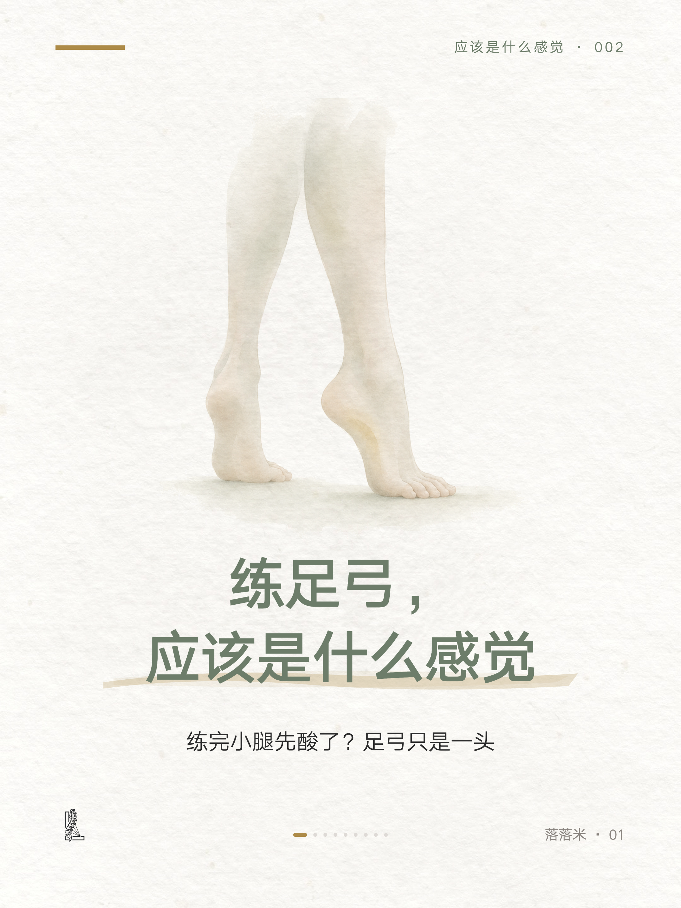
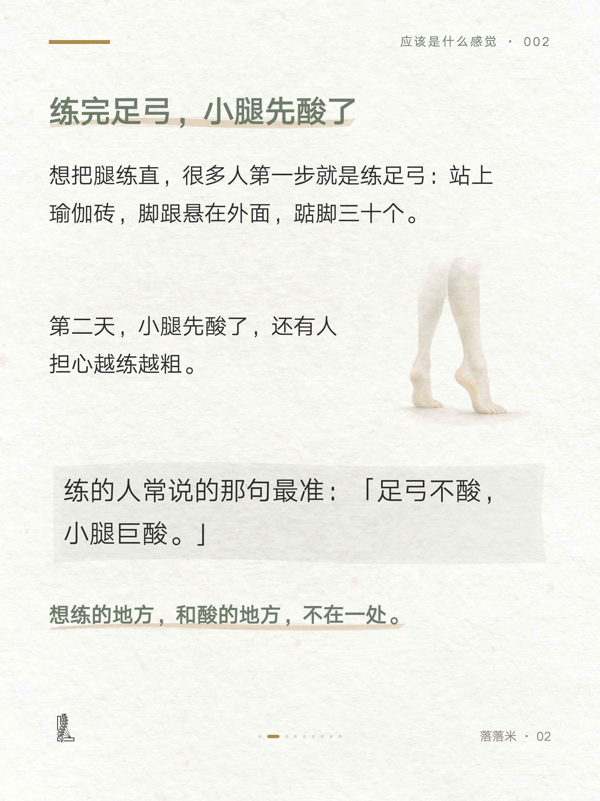
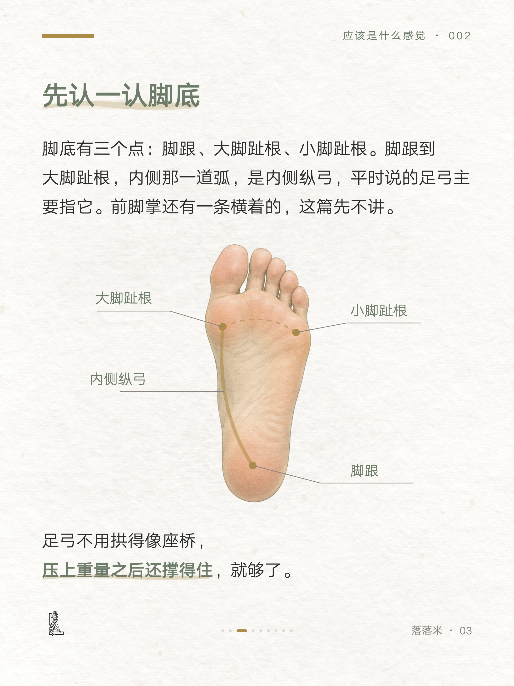
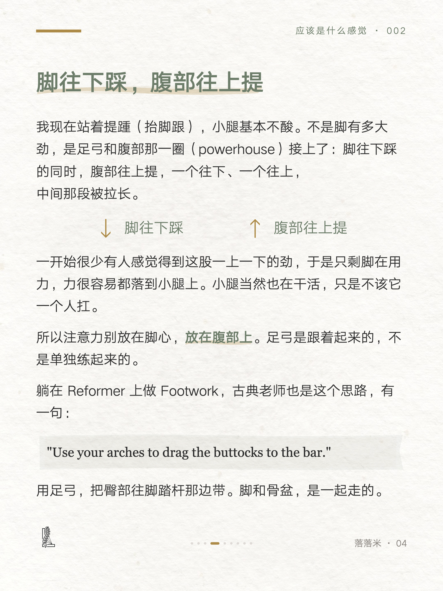
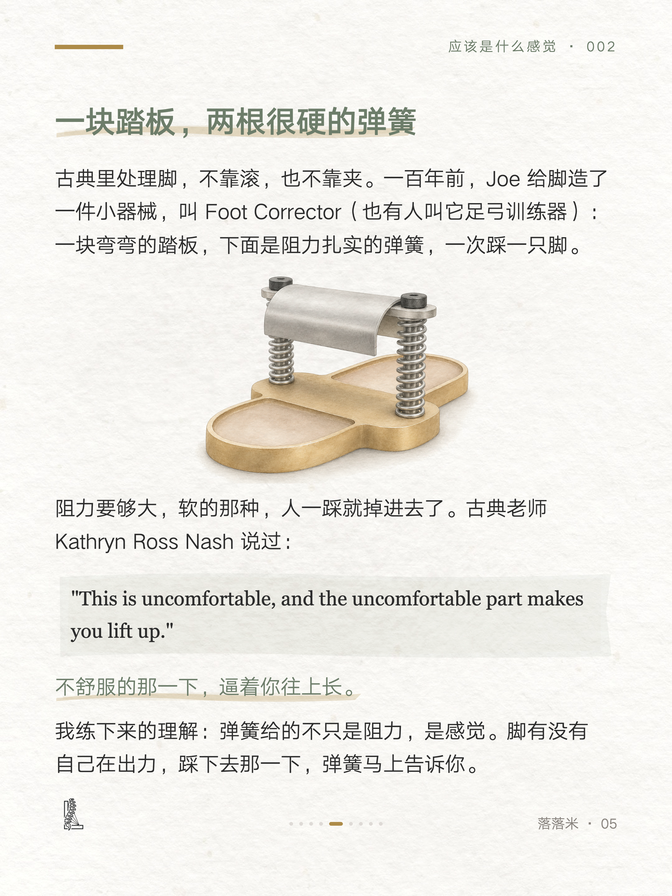
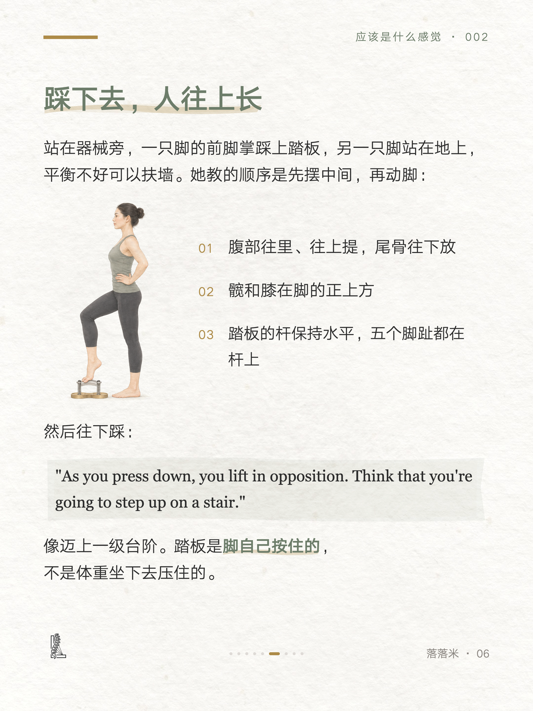
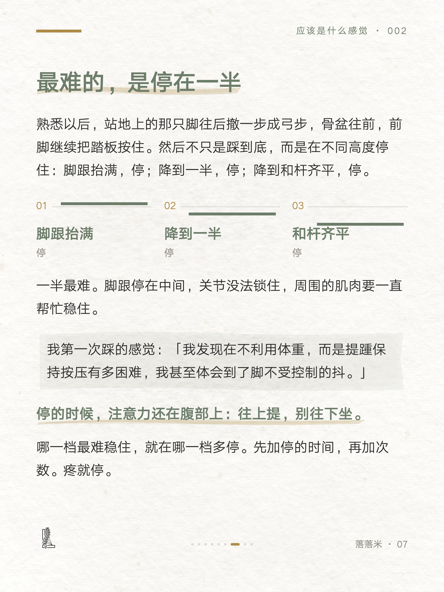
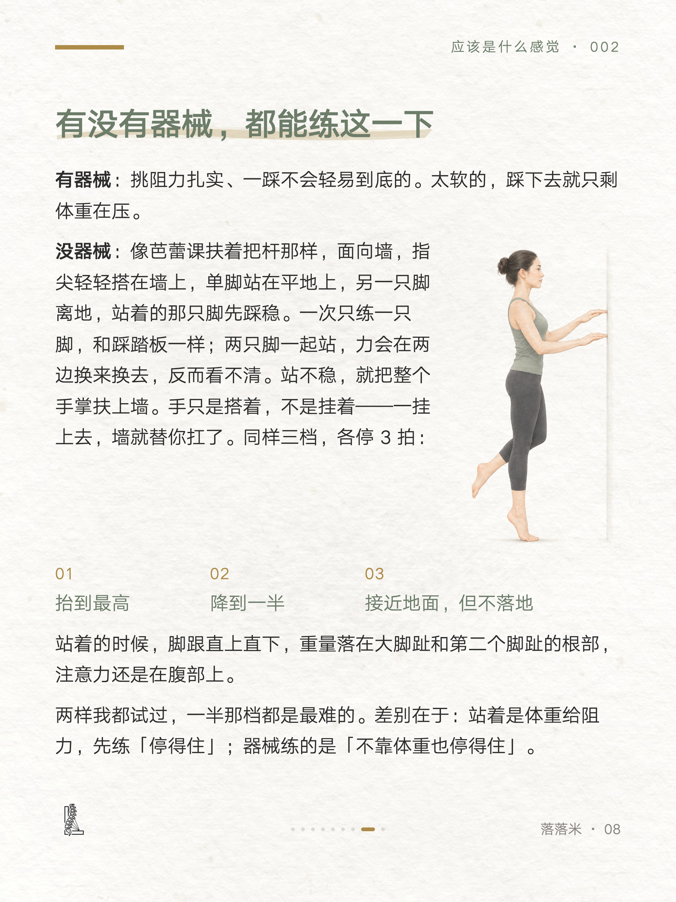
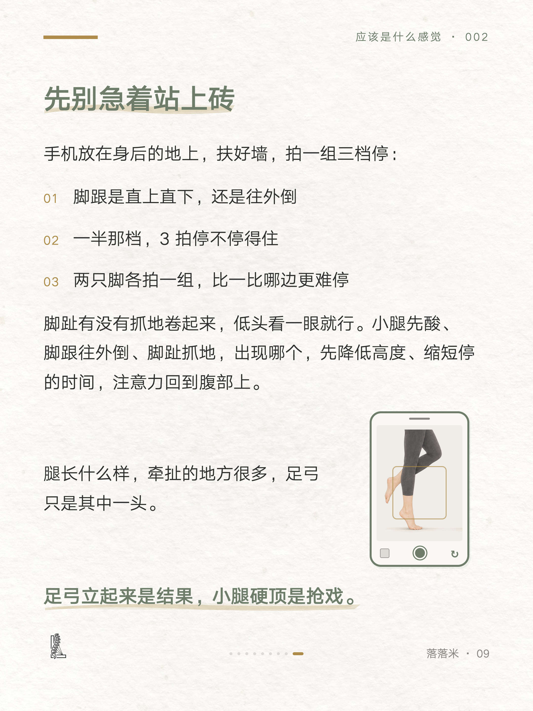

应该是什么感觉 #002
普拉提足弓训练，应该是什么感觉

1 / 9

2 / 9

3 / 9

4 / 9

5 / 9

6 / 9

7 / 9

8 / 9

9 / 9
← 左右滑动浏览全部卡片 →
为了腿型练足弓，第二天小腿先酸了。练的人常说：「足弓不酸，小腿巨酸。」
足弓会影响腿的力线，但只是其中一头。一开始感觉不到足弓很正常。足弓和腹部是连着的：脚往下踩，腹部往上提。注意力先放在腹部上，足弓是跟着起来的。
古典里有一件专门给脚的小器械，Foot Corrector（也有人叫它足弓训练器），弹簧阻力很扎实。我练下来最难的不是踩到底，是停在一半，脚会抖。没有器械也能练：单脚扶墙站平地，脚跟三个高度各停一下。
这一年练普拉提，我观察到脚变了三件事：脚趾能分得很开，大脚趾外翻好了很多，鞋从厚底换成了薄底。
附一个手机就能拍的自测。